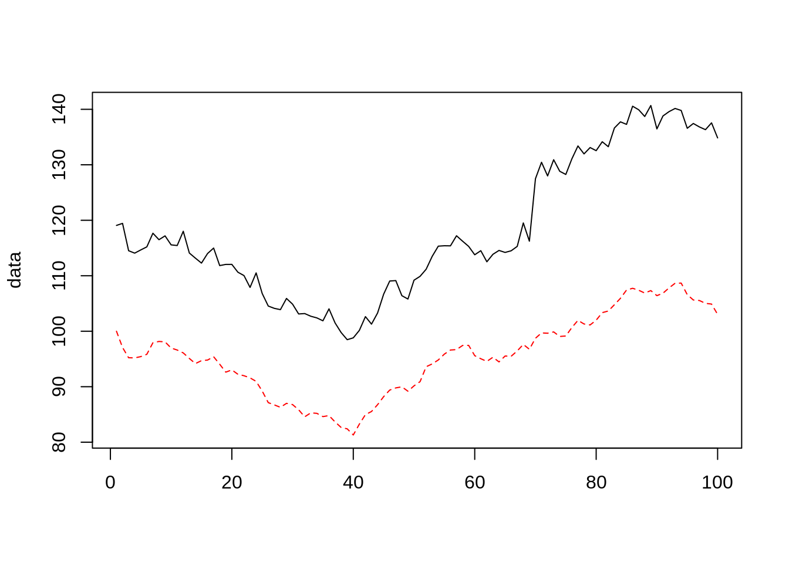
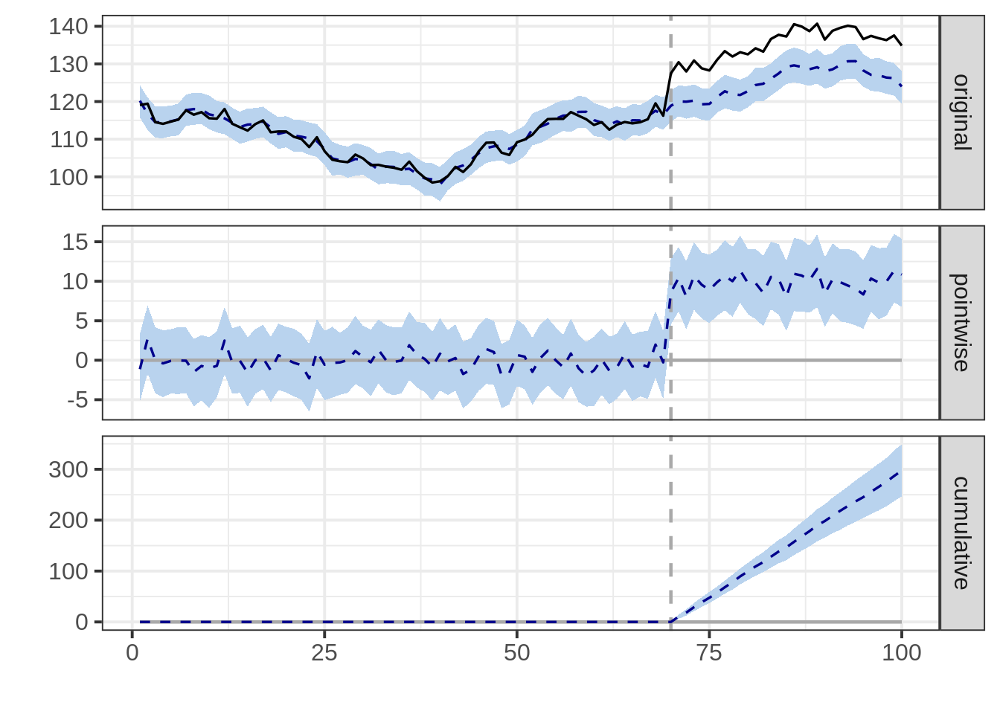
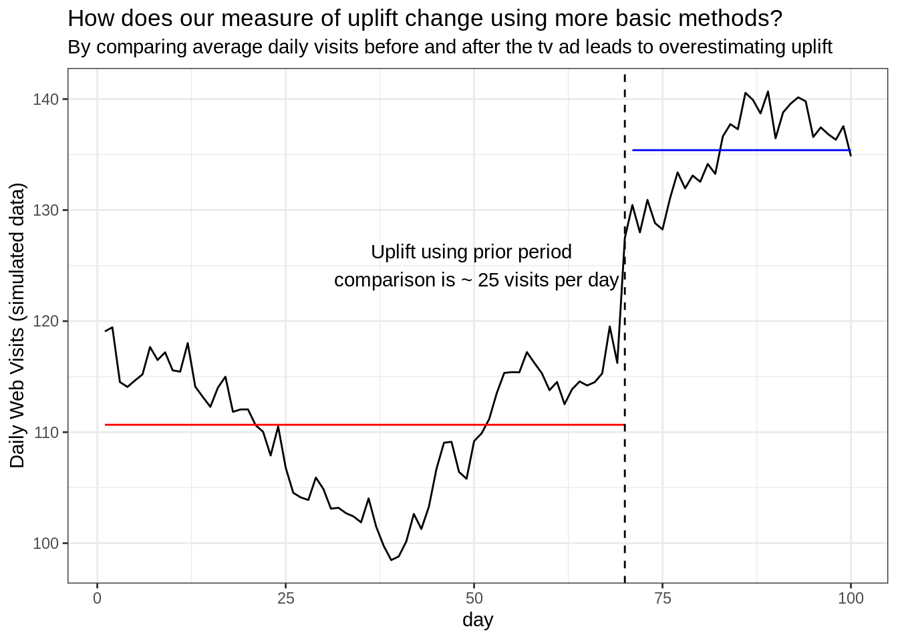

10 About Offline Attribution
So far we have looked exclusively at digital marketing. However offline media channels also play an important part for many businesses. Generally speaking, the offline media channels include TV, broadcast, newspaper, coupons and outdoor advertising etc. Compared to online attribution, it is more difficult to measure the impact of offline marketing interventions.
When a randomised controlled experiment is not possible, an inferential method can assist. Below we demonstrate one such method for causal inference.
Developed by Google, the CausalImpact R package implements methods for
causal inference using Bayesian structural time-series models (Brodersen et al. 2015).
Lets see how this works.
10.1 Scenario
You run a business that sells widgets. Throughout the year your product demand
and website traffic goes up and down based on a variety of seasonal factors.
You decide to run a TV commercial to promote your product coming into a busy
time of year. This advertisement kicks off on a specified launch date and runs
in just one of your markets (not all regions).
How can we measure the impact of this TV advertisement on website traffic?
The intuitive answer is measure the change in sessions before and after the launch date of the commercial. If we want to get more sophisticated we might try to compare the change in our advertising region vs. all others.
However, a key problem here is recognising what would have happened if we didn’t run our TV commercial. If we timed our campaign to coincide with a busy time of year, how much of our uplift is due to the advertising versus just organic uplift? Are we giving the advertising channel too much credit and inflating our ROI estimates?
10.2 Causal Inference Modelling
The solution uses a three step process:
- Identify a control group which in that case could be website sessions from another unaffected region.
- Using historical data from our advertising region, construct a model that predicts what would have happened in our advertising region during the campaign period if no action was taken. This is called the counterfactual.
- Compare this counterfactural prediction with the actual number of website sessions to calculate the actual uplift attributable to our TV commercial.
It is important that the control group selected is not impacted by the campaign in any way, otherwise the results may be misleading.
Lets first load the packages required:
library(CausalImpact)
library(tidyverse)For this example we will simulate some time series data.
The red dashed line is the web traffic for our control region. The solid black line is the web traffic for our region where the TV commercial is airing.
We will select our TV campaign period to be from day 70 - 100 with an uplift of 10 sessions per day.
set.seed(2018)
x1 <- 100 + arima.sim(model = list(order = c(1,1,0), ar = 0.7), n = 99)
y <- 1.2 * x1 + rnorm(100)
y[70:100] <- y[70:100] + 10
data <- cbind(y, x1)
matplot(data, type = "l")
pre.period <- c(1, 70)
post.period <- c(71, 100)We can now fit the causal inference model using the CausalImpact() function.
impact <- CausalImpact(data, pre.period, post.period)## Posterior inference {CausalImpact}
##
## Average Cumulative
## Actual 135 4062
## Prediction (s.d.) 125 (0.86) 3764 (25.69)
## 95% CI [124, 127] [3713, 3815]
##
## Absolute effect (s.d.) 9.9 (0.86) 297.6 (25.69)
## 95% CI [8.2, 12] [246.7, 349]
##
## Relative effect (s.d.) 7.9% (0.68%) 7.9% (0.68%)
## 95% CI [6.6%, 9.3%] [6.6%, 9.3%]
##
## Posterior tail-area probability p: 0.00101
## Posterior prob. of a causal effect: 99.89899%
##
## For more details, type: summary(impact, "report")We can also view the results graphically.
The ‘original’ facet shows the actual website visits in the black solid line and predicted values without marketing intervention in the blue dashed line. The period of intervention is shown as vertical dashed lines. The confidence intervals is shaded in blue.
The second, ‘pointwise’ graph basically shows the difference between the actual values and the predicted values.
The third, ‘cumulative’ graph shows the summed effect of the marketing intervention after accumulating the differences caused by the marketing activity since the start date of the intervention.
plot(impact)## Warning: Removed 100 rows containing missing values (geom_path).## Warning: Removed 200 rows containing missing values (geom_path).
We can see that the modelled counterfactual increases in the campaign period, so too does the actual website sessions. Rather than rely on prior period comparisons we are able to extract the pointwise and cumulative uplift in a more reasoned way.
We can also generate a written analysis report. We can see the estimate effect size is 9.91 extra sessions per day, very close to the +10 we injected in our made-up example.
summary(impact, "report")## Analysis report {CausalImpact}
##
##
## During the post-intervention period, the response variable had an average value of approx. 135.40. By contrast, in the absence of an intervention, we would have expected an average response of 125.48. The 95% interval of this counterfactual prediction is [123.76, 127.17]. Subtracting this prediction from the observed response yields an estimate of the causal effect the intervention had on the response variable. This effect is 9.92 with a 95% interval of [8.22, 11.64]. For a discussion of the significance of this effect, see below.
##
## Summing up the individual data points during the post-intervention period (which can only sometimes be meaningfully interpreted), the response variable had an overall value of 4.06K. By contrast, had the intervention not taken place, we would have expected a sum of 3.76K. The 95% interval of this prediction is [3.71K, 3.82K].
##
## The above results are given in terms of absolute numbers. In relative terms, the response variable showed an increase of +8%. The 95% interval of this percentage is [+7%, +9%].
##
## This means that the positive effect observed during the intervention period is statistically significant and unlikely to be due to random fluctuations. It should be noted, however, that the question of whether this increase also bears substantive significance can only be answered by comparing the absolute effect (9.92) to the original goal of the underlying intervention.
##
## The probability of obtaining this effect by chance is very small (Bayesian one-sided tail-area probability p = 0.001). This means the causal effect can be considered statistically significant.10.3 Comparing to other methods
If we rely on a simple, more naive method in this case, we can overestimate the impact of our TV commercial.
By comparing the average daily web sessions before vs. after the campaign started we see an uplift near +25 visits per day. We know this is an over-estimation as we only injected an uplift of +10 when we created the synthetic data.

References
Brodersen, Kay H., Fabian Gallusser, Jim Koehler, Nicolas Remy, and Steven L. Scott. 2015. “Inferring Causal Impact Using Bayesian Structural Time-Series Models.” Annals of Applied Statistics 9: 247–74.